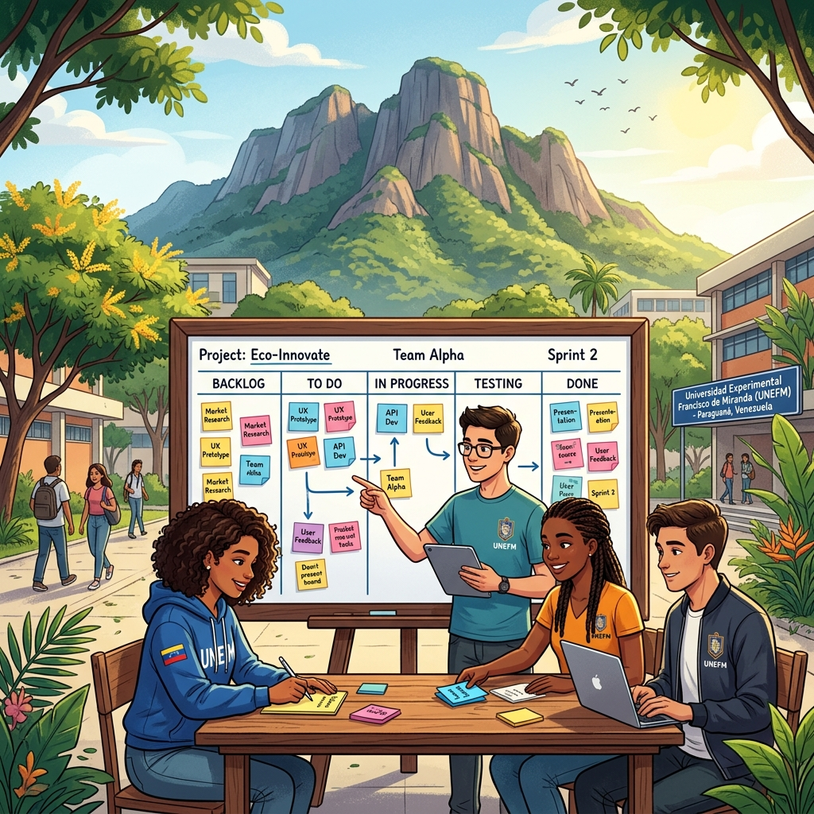

Una iniciativa para transformar la experiencia educativa de los estudiantes en la Península de Paraguaná, conectando la formación científica con la realidad socio-productiva local.

Separación entre ciencias y necesidades socio-productivas.
Baja motivación intrínseca y falta de autonomía.
El Cerro Santa Ana no se aprovecha pedagógicamente.
Uso exclusivo de recursos propios.
Respuesta a problemas diagnosticados.
Metodologías ágiles en educación media.
Alineación con el desarrollo sustentable.
Formación en Scrum y EduScrum con tableros offline.
Identificar necesidades y potencialidades de Moruy.
Propuestas científicas sustentables en co-creación.
Desarrollo mediante ciclos de trabajo cortos.
Fundamento del derecho a la educación y desarrollo integral.
Principios rectores de la educación para el trabajo y desarrollo endógeno.
Impulso a la innovación y apropiación social del conocimiento (LOCTI).
Objetivos nacionales de independencia tecnológica y soberanía productiva.